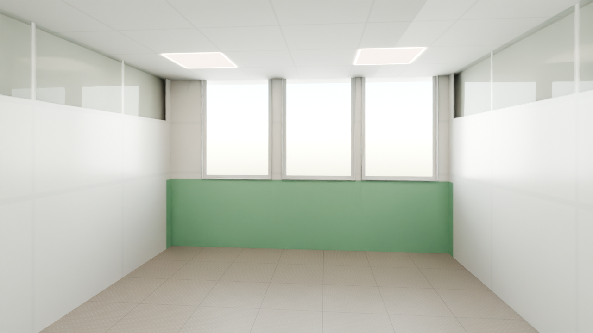
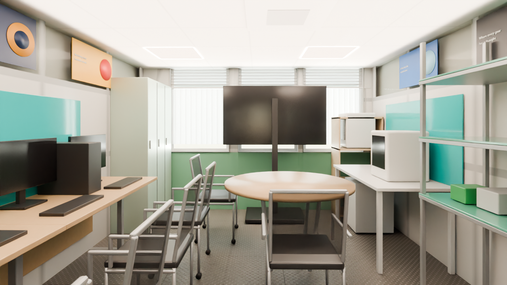
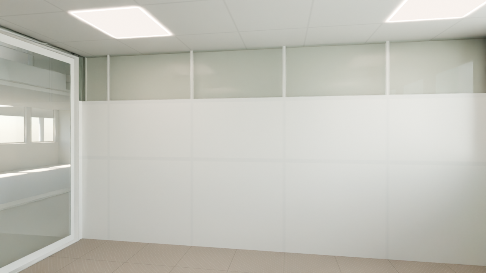
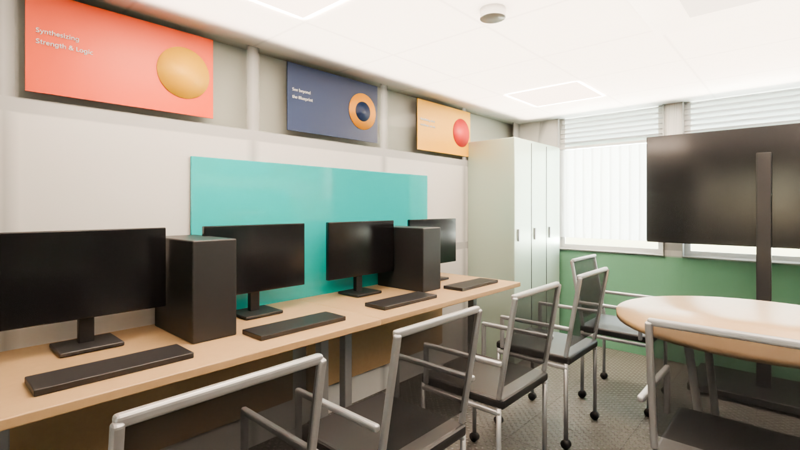
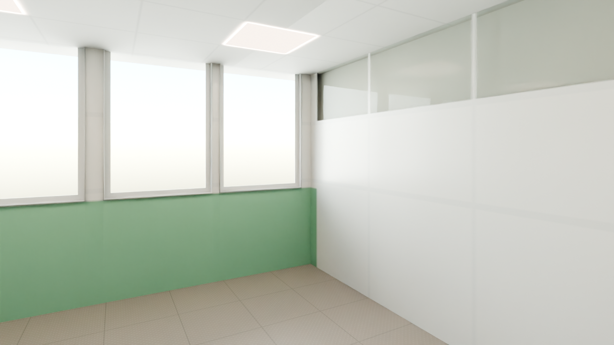
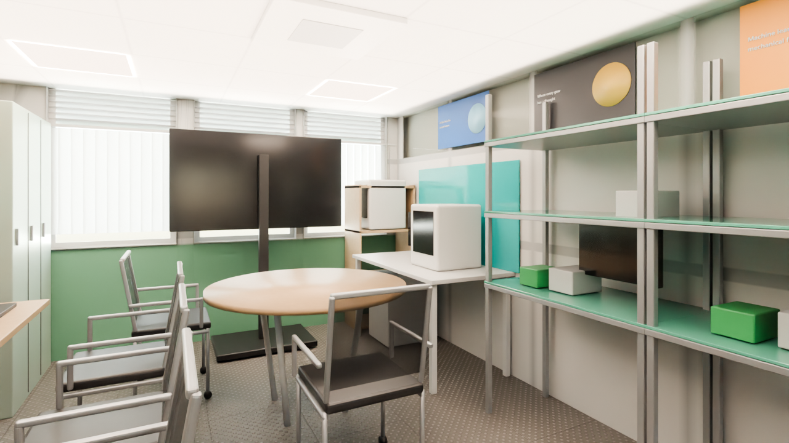
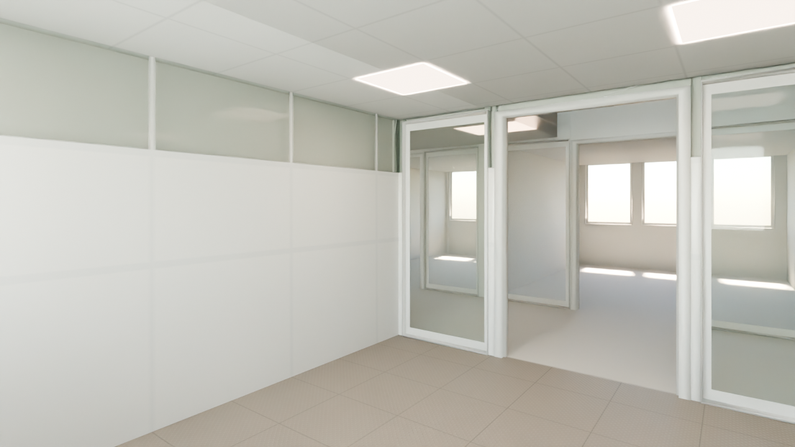
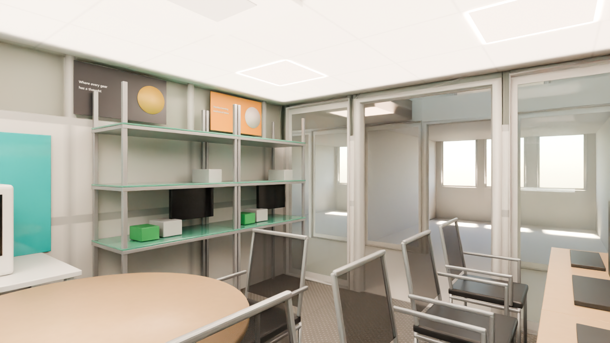

IoT Lab — National ICT Innovation Hub
Ground floor, bottom row between the Podcast Room and Office Space 1. Window wall to the south, glazed corridor screen with an open 1.40 m doorway to the north. Furniture at real scale; what does not fit is listed below.
Zone: X -15.43..-11.87, Y -3.24..+1.26 (clear 3.46 x 4.32 m), ceiling soffit 2.14 m. Each angle: the reference photo, the shell (model with materials and light only) and the furnished scene. The original meshes are untouched; no render contains people.
8 draft
The room, looking at the window
photo Hub Space-42.jpgFrom the corridor end: bench desks on the left, round table and printer corner on the right, TV in front of the blinds.
 Photo Hub Space-42.jpg
Photo Hub Space-42.jpg
Shelldraft
Furnisheddraft
East wall and bench desks
photo Hub Space-46.jpgThe bench row with monitors under the turquoise board, the posters in the clerestory band and the lockers in the corner.
 Photo Hub Space-46.jpg
Photo Hub Space-46.jpg
Shelldraft
Furnisheddraft
Printer corner
photo Hub Space-49.jpgSouth-west corner: 3D printers, pine shelf, the west board and the window wall.
 Photo Hub Space-49.jpg
Photo Hub Space-49.jpg
Shelldraft
Furnisheddraft
Lab shelving and the corridor screen
photo Hub Space-50.jpgLooking back north-west at the steel lab shelving and the glazed corridor screen with its doorway.
 Photo Hub Space-50.jpg
Photo Hub Space-50.jpg
Shelldraft
Furnisheddraft
What differs from the photos (ranked)
- Round 1 fixed: brightness now matches the photos (window not blown out), clerestory glass reads as daylight, darker floor with visible studs, clear partition grid, louvre band and whiter blinds, posters raised to just under the ceiling with flat colours, open chairs, pale-green lockers below the ceiling, cameras moved back to the doorway and the south-east corner.
- 1. Chairs still read too light. The open mesh is half transparent, so against the bright room the backs look grey and the silver frames dominate; in the photos they are clearly black mesh shells with curved backs on silver legs. The frame is also rectilinear where the real one is curved.
- 2. Foreground still crowded in two frames. 02: the nearest bench desk with its monitors fills about a third of the lower left. 04: the round table takes about a quarter of the lower left and two chairs fill the right edge. This is the room size: the model room is about 0.7x the real one, and the cameras already sit in the doorway and the corner.
- 3. The room looks shallower than in the photos. Photo 42 looks down about 6 m to the window; the model gives 4.3 m, so the TV and the window wall look close and large.
- 4. Poster headlines are readable but small and light; the photographic artwork (eye, gears, robot arm, faces) is reduced to one flat disc per poster on purpose.
- 5. Lockers read nearly white under the brighter light; the pale green is subtle compared with photo 48.
- 6. Boards and screens are plain: no handwriting, no A4 poster, no image on the TV (clutter left out on purpose).
- 7. PC towers on the bench are plain black boxes; in the photos they are smaller towers with visible front panels, and laptops sit on the desks (left out with the clutter).
Dropped at real scale
| Item | Why |
|---|---|
| Bench desks 3-5 (of 4-5) | 1.4 x 0.7 m each; the east wall has 2.8 m of free run between the doorway clearance and the lockers |
| Lab shelving bays 3-4 (of 4) | 1.0 x 0.5 m each; the west wall north of the printer desk is 2.2 m long |
| Second round table (Ø 1.2 m) | with one table, 2 bench desks and the printer desk the free floor is ~1.6 x 1.2 m |
| Roll-up banner (0.85 x 2.0 m) | its spot by the corridor screen is the doorway clearance |
| White staff desk + red / blue office chairs (south-east) | 1.4 x 0.7 m; only 0.4 m is left between the bench row and the lockers |
| Split AC unit above the window | the window head is above the 2.14 m soffit, there is no wall above it in the model |
Free camera
Walk the photoreal IoT Lab (baked, free camera) →
Files and last updated
| File | Kind | Size | Modified |
|---|---|---|---|
| 01_room_south_furnished.png | DRAFT | 1.0 MB | 2026-10-02 01:07 |
| 01_room_south_shell.png | DRAFT | 821.7 KB | 2026-10-02 00:55 |
| 02_east_wall_furnished.png | DRAFT | 1014.4 KB | 2026-10-02 01:08 |
| 02_east_wall_shell.png | DRAFT | 821.7 KB | 2026-10-02 00:56 |
| 03_printer_corner_furnished.png | DRAFT | 1.0 MB | 2026-10-02 01:09 |
| 03_printer_corner_shell.png | DRAFT | 783.3 KB | 2026-10-02 00:57 |
| 04_lab_bench_north_furnished.png | DRAFT | 977.0 KB | 2026-10-02 01:10 |
| 04_lab_bench_north_shell.png | DRAFT | 857.4 KB | 2026-10-02 00:58 |
| sbs_01_room_south.png | side-by-side | 2.1 MB | 2026-10-02 01:10 |
| sbs_02_east_wall.png | side-by-side | 2.1 MB | 2026-10-02 01:10 |
| sbs_03_printer_corner.png | side-by-side | 2.0 MB | 2026-10-02 01:10 |
| sbs_04_lab_bench_north.png | side-by-side | 2.0 MB | 2026-10-02 01:10 |
| tour/index.html | free-camera page | 11.9 KB | 2026-10-02 01:29 |
| walk/index.html | free-camera page | 26.4 KB | 2026-10-02 01:30 |
| walkbaked/index.html | free-camera page | 41.9 KB | 2026-10-02 01:34 |
Render settings
- Room
- IoT Lab - X -15.43..-11.87, Y -3.24..+1.26, soffit 2.14 m
- Renderer
- Blender 4.2 LTS, Cycles, CPU only (i5-10505)
- Draft settings
- 1280 x 720, 32 samples, adaptive 0.012, OIDN
- Daylight
- South glazing - 12 x 6 m soft panel 4 m out (9000 W), sky strength 2.2; vertical blinds, louvre band
- Ceiling lights
- 4 LED panels 600 x 600, 5000 K, plus a soft ceiling fill
- Tone mapping
- AgX, Medium High Contrast, exposure -0.22 (same as the reception)
- Furniture
- Real scale, nothing shrunk
- People
- None, by design